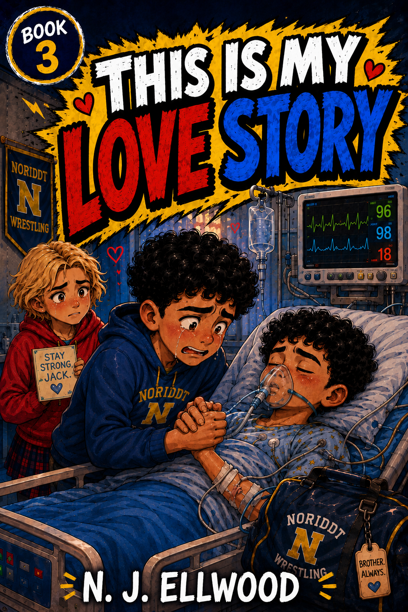

TTWORBYTES PRESENTS

This Is My Love Story
“This is not a love story. It only looks like one because Ruby Mason is playing Juliet and, somehow, I’m Romeo.”
My name is Jake Morrow. I'm twelve years old.
THE STORY
One School Play. Two Leading Roles. Far Too Many Feelings.
A funny and emotional story about first feelings, family, friendship and the dangers of being cast opposite Ruby Mason.
Jake Morrow has been chosen to play Romeo in the school production of Romeo and Juliet.
That would already be embarrassing enough. Unfortunately, Ruby Mason is playing Juliet, the entire school knows about the kiss, and Jake's friends have no intention of letting him forget either fact.
But while Jake worries about rehearsals, rumours and feelings he refuses to understand, something far more serious is happening to the person he loves most.
AT THE HEART OF THIS STORY
It’s Only a Play. Probably.
Ruby sees the school production as a challenge. Jake sees it as a very public disaster waiting to happen.

“Ruby is Juliet. Jake is Romeo. Everyone else thinks this is the funniest thing that has ever happened.”
Ruby approaches the play with the same quiet confidence she brings to everything else. Jake, meanwhile, is trying to remember his lines, ignore the teasing and convince himself that none of this means anything.
Beneath the comedy, however, Jake is carrying a fear that has nothing to do with the stage. As his feelings for Ruby become harder to dismiss, his love for Jack is tested in ways he never expected.
Meet the PeopleWHY THIS STORY MATTERS
More Than a School Play
Jake insists this is not a love story.
But love does not always mean romance. Sometimes it means standing beside a friend. Sometimes it means admitting that someone matters to you.
And sometimes it means loving your brother so much that the thought of losing him becomes almost impossible to bear.
This is a story about embarrassment, fear and first feelings—but above all, it is about the different ways people hold on to one another when life becomes frightening.